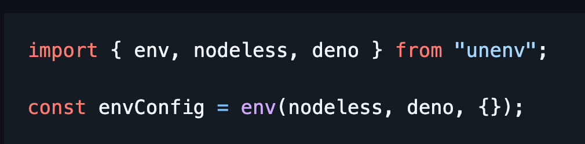

Next-Gen
Hi, I'm
Wes Bos
Hamilton, On 🇨🇦
@wesbos on 𝕏, gram, tok, tube and suits
Web
Dev
Courses
+

syntax.fm × @syntaxfm × sentry
What is this talk about?
Server Side JavaScript
JavaScript Runtimes
Engines + APIS === Runtime
V8 → 


Spider Monkey → 
JavaScriptCore → 
Node.js
→
Deno
[Deno Deploy, Netlify Edge, Supabase Edge]
→
Cloudflare
Workers
[Workerd]
→
Bun
→
Fastly
Compute
@edge
→
Alibaba
Edge
Compute
→

llrt
→

*experimental*
So if my math is correct...
3 Browser JS Runtimes
6+ Server JS Runtimes
The next generation of server JS we write will be standards based.
Yes, run it anywhere, but it also means we have interchangable + composable layers
Should you care?
maybe. You should care about the standards
WHY
Why do we have so many runtimes?
Better
- TS out of the Box
- A push for Standard APIs
- ESM Spec
- Easy wins (dotenv, prompt, JSX, etc..)
- A Joy to work with
Faster
- "cold starts"
- "Rust"
- "WASM"
- "Async"
Faster - Cheaper?
- At scale, faster is a lot cheaper
- CPU Time vs Wall Time
Stronger
Server Kinds
Traditional VM / Long Running Server
- Always running
- Maintain Memory
- Scaling up via Memory/CPU
- Scaling up via more servers
Serverless Functions
- Only Run in short bursts when needed
- Scale up by running more
- Pay for what you need
Edge Functions
- Run closer to your user
- Can run in-between / intercept requests
Limited API- Not 100% node compat (close!)
What's a poor dev to do? Support 6+ Runtimes?!
well, ya. But also no.
Web Standards
TC39
Async + Await, esm, const, arrow functions
W3C
WebRTC, Streams API, Web Components
WHATWG
Fetch, Service Workers, Resize Observer
Browser JS is Server JS
JS is JS
We don't need different ways to do the same thing
Let's look at some of those standards
Fetch
Web Request + Web Response are life
In the Browser, We send Requests
On the Server, we handle them!
Node
Not Native, But:
Hono.js, H3, @whatwg-node/server, Fastify Plugin, Next.js Routes, Sveltekit, Astro + more
Web Streams
Blow Chunks as you have em
Events!
Listen for events on anything!
Form Data
Web Workers
- Multi Threaded / Parallel
- CPU intensive tasks
- Non-blocking
alert()
prompt()
confirm()
Async
Local
Storage
Really cool new API
Developer Ecosystem
The tooling is standardizing on standards
unenv
Deno, Bun, Cloudflare, Node
Think of these as standards based Express that can run anywhere.
HMR, Routing, Middlware, Caching, Web Sockets, Assets
Vite + Nitro = Vinxi
Build your own Framework
Any JS LIb + Standard Server = Metaframework
- ✅ Routing
- ✅ RPC
- ✅ Data Loaders
- ✅ Middleware
- ✅ API Endpoints
- ✅ Server Rendering
- ✅ Streaming
- ✅ caching
- + More.
Tanstack Start
Client: Vite, Tanstack Query, Tanstack Router
Server: Vinxi → Nitro → H3 → srvx
import { DOMParser, parseHTML } from 'linkedom/worker';
JSDom Alternative. Works everywhere
HTMLRewriter
- Cloudflare Invented
- Re-implemented everywhere
- Not a standard
So much more!
This ins't write once work everywhere
At least not yet...
It is a set of standardized APIs and an ecosystem of tools that work together
Future Server JS isn't about making it work everywhere.
It's about building with standards, enjoying the huge ecosystem's best tools and having the choice for it to run anywhere.
Thanks
@wesbos